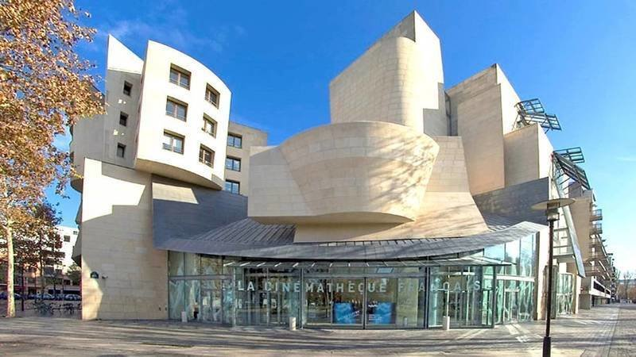

Топ фільмів у високій якості 2022 року
Топ 10 найкращих кінотеатрів світу
В епоху онлайн-трансляції багато людей дивляться фільми у своїй вітальні або на своїх смартфонах і планшетах.
Але Netflix, Hulu, Amazon Prime Video або навіть система домашнього кінотеатру
не можуть зрівнятися з досвідом перегляду чудових фільмів у кінотеатрі, наповненому людьми.
Коли ви дивитеся голлівудський блокбастер в одному із найкращих кінотеатрів світу, ви отримуєте незабутні враження.
1. Французская синематека, Паріж
Французька синематика – частково музей, частково кінотеатр. Його зовнішність виглядає як музей.
У ньому знаходиться один із найбільших у світі кіноархівів, в якому ви зможете заглянути в історію французького та світового кіно.
Колекція з'явилася завдяки зусиллям Анрі Ланглуа та Лотте Ейснер у середині 1930-х років зі збирання та показу фільмів.
На початок Другої світової війни Ланглуа придбав одну з найбільших колекцій у світі.
Після війни Синематика переїхала на 51 вулицю Берсі в 12-му окрузі Парижа і знову відчинила свої двері в постмодерністській будівлі,
спроектованій великим архітектором Френком Гері. Синематика – ідеальне місце для любителів кіно.
2. Відкритий кинотеатр Cine Thisio, Афіни
У Греції є кілька кінотеатрів просто неба, але Cine Thisio в Афінах пропонує самий величний вигляд, ви можете як дивитися фільм,
так і бачити одну з найбільших пам'яток нашої планети - Акрополь. Він був побудований в 1935 році і з того часу працює щоліта та весни.
У ньому показує лише невелика кількість ретельно відібраної класики кіно та іноді сучасні картини гідні цього місця.
Ви можете насолодитися переглядом на відкритому повітрі, насолоджуючись чудовим краєвидом на Акрополь та Парфенон.
Ви отримаєте найкращий нічний вигляд, який тільки можна собі уявити.
3. TCL Кітайський театр, Лос-Анджелес
Китайський театр TCL, також відомий як Китайський театр Граумана, на Голлівудському бульварі в Лос-Анджелесі було відкрито у 1927 році.
З того часу в ньому пройшло безліч знаменитих прем'єр та три церемонії вручення премії Оскар.
Одна з найпрекрасніших речей цього кінотеатру - відбитки ніг та рук та підписи, залишені кінозірками у бетонних блоках зовні.
Він був реконструйований у 2013 році, перетворившись на спеціально розроблений театр IMAX.
Китайський театр TLC має один із найбільших кіноекранів у США.

4. Alamo Drafthouse, Остін
Перший кінотеатр мережі Аламо Драфтхаус був відкритий нещодавно в 1997 році в Остіні, штат Техас.
З того часу мережа кінотеатрів розширилася до 22 міст по всій території Сполучених Штатів. Вони переглядають та вивчають досвід перегляду фільмів з моменту свого створення.
Вишукана їжа, напої та зручні сидіння, це лише частина того, що вони з'ясували за цей час. Реклама, балакучі діти і телефони, що постійно телефонують, можуть зіпсувати ваш досвід.
Отже, в Аламо Драфтхаус реалізовано політику нульової терпимості до розмов. Діти віком до шести років не допускаються. Телефони також заборонені.
5. Kino International, Берлін
У Kino International проходить безліч вечірок, фестивалів та кінопрем'єр. Він розташований на вулиці Карла Маркса, де розташовані цілі квартали історичних будівель.
Враховуючи його статус спадщини, зовнішній фасад та внутрішнє оздоблення, він зберігає чарівність соціалістичної доби. Він вміщує лише 600 осіб. Стіни Kino International покриті акустичними панелями, що демпфують,
а його акустична технологія не поступається технології звукозаписних студій.
6. UPLINK Shibuya, Токіо
Uplink X - один із найменших кінотеатрів у Японії, його зал вміщує лише 40 осіб. Але не дозволяйте його крихітному розміру обдурити вас. Перегляд кіно в цьому кінотеатрі спрямований на те, щоб зробити фільм більш соціальним.
Після фільму вирушайте до Cafe Tabela на першому поверсі, щоб скуштувати смачні страви середземноморської кухні.
7. 4DX, Сеул
4DX у Південній Кореї позиціонує себе як перший у світі кінотеатр 4D для показу студійних релізів. Він переносить старий добрий 3D досвід на абсолютно новий рівень,
додаючи рухи, водні ефекти, туман, блискавку, бульбашки, дощ, вітер, запах та інші спеціальні ефекти. Це змушує вас почуватися всередині фільму, живучи цим. Це як у парку розваг.
Цей театр не для слабонервних, у 4DX не пускають вагітних жінок та людей із серцевими захворюваннями та болями у спині.
8. Кінотеатр Кастро, Сан-Франциско
Кінотеатру Кастро у Сан-Франциско майже сто років. Він був побудований в 1922 році і є одним з останніх театрів своєї епохи, що збереглися.
У ньому показують суміш класичних та нових фільмів, щоб віддати данину його історії. Він може проектувати 70-мм фільми, а також відтворювати справжній досвід німого кіно минулої доби.
Театр Кастро вміщує 1400 людей.
9. Cine de Chef, Сеул
Кінотеатр Cine de Chef розташований у південній частині Сеула. Це чудове поєднання розкішного кінотеатру та ресторану для гурманів.
У ньому лише 30 розкішних крісел класу Quinette Gallay, спеціально призначених для Cine de Chef. Квиток коштує близько 130 доларів, але ви не пошкодуєте, що заплатите стільки,
тому що ви отримаєте безкоштовне паркування, яке супроводжуватиме і сучасну азіатську кухню, приготовлену найкращими шеф-кухарями Сеула, сертифікованими Le Cordon Bleu.
10. Raj Mandir Cinema, Джайпур
Кінотеатр Raj Mandir був відкритий у 1976 році та вміщує 1200 осіб. Він збудований у стилі Art Moderne, який сьогодні рідко де можна побачити. Ціни на квитки досить дешеві,
але він входить до найкращих кінотеатрів світу. Зовні він більше нагадує палац, ніж мультиплекс. Лобі прикрашають виготовлені на замовлення дерев'яні плитки, люстри та інкрустація склом. Він особливо популярний серед туристів,
які хочуть отримати незабутні враження від Боллівуду.